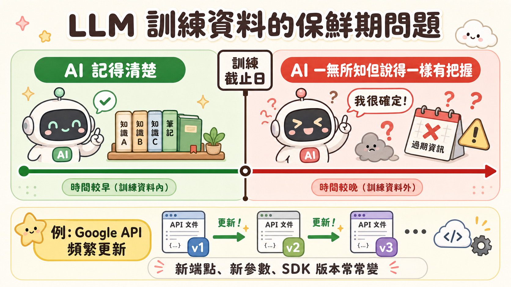
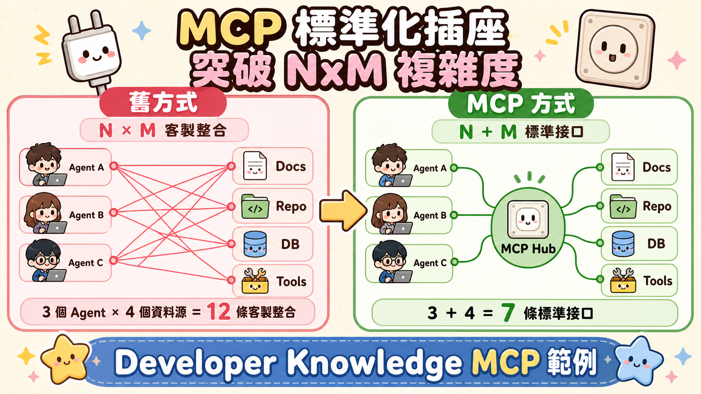

問一個你每週都在問的問題：「這個 Google Cloud API 的正確用法是什麼？」
AI 信心滿滿地給你程式碼。你貼進去跑。錯誤。你再問。它給你另一個版本。還是錯。你開始懷疑自己，然後才意識到——那個 API 的參數三個月前就改掉了，但 AI 的知識還停在訓練截止日。
這不是 AI 在說謊，這是 AI 在忠實地回憶一個已經過去的世界。
訓練資料的保鮮期問題
每個 LLM 都有一道看不見的時間牆。
訓練截止日之前的知識，模型記得清清楚楚；截止日之後的，它一無所知。而且它通常不會主動告訴你「我不確定這個還是不是最新的」——它會用和事實一樣有把握的語氣，把舊版本的資訊說給你聽。
這個問題在一般知識領域還好應付：常識不太會過期。但在開發者生態系，這就是一個根本性的缺陷。Google Cloud 的 SDK、API 介面、認證方式、配額限制，這些東西每幾個月就在變。AI 說「用這個方法」，但這個方法可能已經被 deprecated，甚至根本被移除了。
更麻煩的是，你沒有辦法從答案本身分辨出它是不是過時的。它說得一樣流暢，一樣具體，一樣有信心。

文件變成即時工具的那一刻
Google Developer Knowledge MCP 的邏輯很簡單，但影響卻很深遠。
它把 Google 所有公開開發者文件——Google Cloud、Workspace、Firebase——變成一個機器可讀的即時資料庫，並且透過 MCP（Model Context Protocol）的標準介面對外開放。Antigravity 只需要在設定檔裡加一段 JSON，就能在每次回答 Google 技術問題時，先查詢這個資料庫，拿到今天的答案，而不是訓練截止日的答案。
設定的核心就是一個 JSON 區塊，存放在 ~/.gemini/config/mcp_config.json：
{
"mcpServers": {
"google-developer-knowledge": {
"headers": {
"X-Goog-Api-Key": "<YOUR_API_KEY>"
},
"serverUrl": "https://developerknowledge.googleapis.com/mcp"
}
}
}前置作業是去 Google Cloud Console 建一個 API Key，並把它的存取範圍限定在 Developer Knowledge API——這樣就算 Key 外洩，能做的事也只有查文件。加完設定、重新整理 MCP 清單後立即生效。
一個 JSON 擋住的不只是錯誤
值得多想一層的，是這個設定背後的架構邏輯。
傳統上，如果你想讓 AI 知道「最新文件說什麼」，你有幾個選項：定期用新資料 fine-tune 模型（貴、慢）、每次對話把文件貼進 prompt（token 成本高、容易超出限制）、或者自己搭一套 RAG 系統去爬文件（維護成本高）。
MCP 的做法是把這件事標準化。文件提供方（Google）負責維護即時資料庫和 MCP Server，你只需要插上這個標準插座。不用 fine-tune，不用塞 prompt，不用維護爬蟲。而且這個插座是通用的——今天接 Developer Knowledge，明天可以用同樣的格式接 BigQuery、接 Google Maps、接任何有 MCP Server 的服務。

讓 AI 活在今天，而不是去年
實際測試很直觀。設定完成之後，問 Antigravity「根據 Google Developer Knowledge，Python 上傳檔案到 Google Drive 的正確方法是什麼？」它會先呼叫 MCP 工具查詢文件，然後給你今天版本的答案。
第一次使用 MCP 工具時，Antigravity 會跳出確認視窗。這個設計本身也值得注意：Agent 要去外部查詢資料，使用者應該要知道它正在做什麼。確認之後，MCP 工具就被授權了，後續使用不用再逐次確認。
這個模式的本質是把「知識的時效性」從 AI 的訓練流程裡切割出來，變成一個可以獨立更新、獨立管理的組件。AI 不需要被重新訓練才能知道 API 改了——只要文件更新了，下一次查詢就拿到最新答案。
一個 JSON，讓你的 AI 助理從活在去年，變成活在今天。
來源：Google Codelab「Google Antigravity 2.0、IDE 和/或 CLI 中的 Google Developer Knowledge MCP 伺服器」
codelabs.developers.google.com/developer-knowledge-mcp-antigravity